|
Hi! I am a Ph.D. candidate at the Language Technologies Institute (LTI) in Carnegie Mellon University, advised by Prof. Lei Li.
Before that, I was a full-time research scientist at ByteDance AI Lab for two years, advised by Prof. Hao Zhou.
I received my master's degree from Fudan University (FDU).
During this period, I was advised by Prof. Xiaoqing Zheng in Fudan University Natural Language Processing Group.
|
{kind=link}
Publications
A full list of publications is here. (* indicates equal contribution and # indicates project lead.)
AI for Science
|
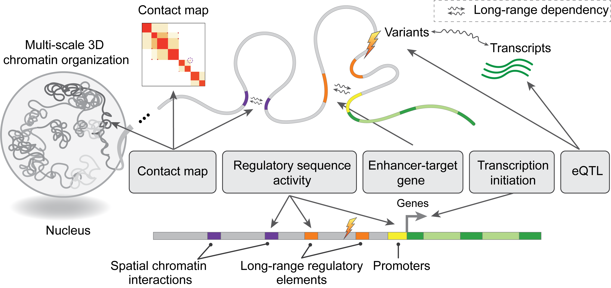 |
Nature Communications 2025. [paper] [code] |
|
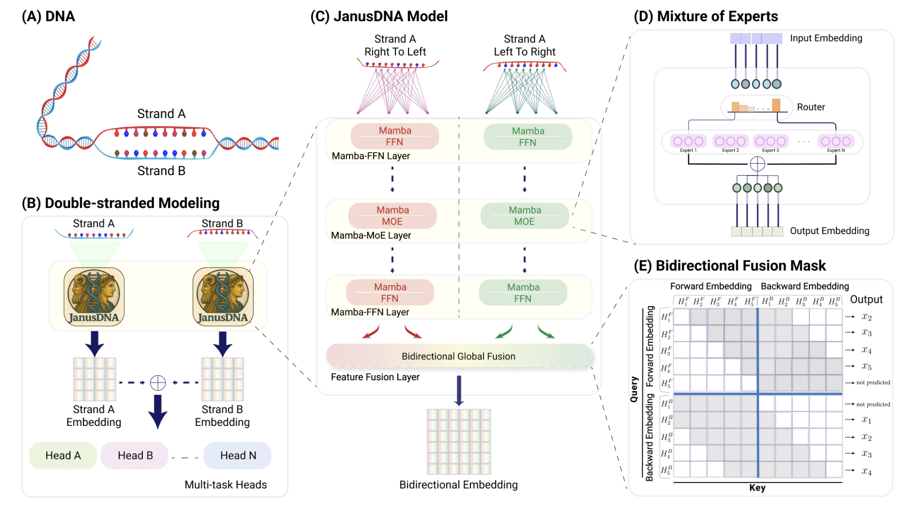 |
NeurIPS 2025. [paper] [code] |
|
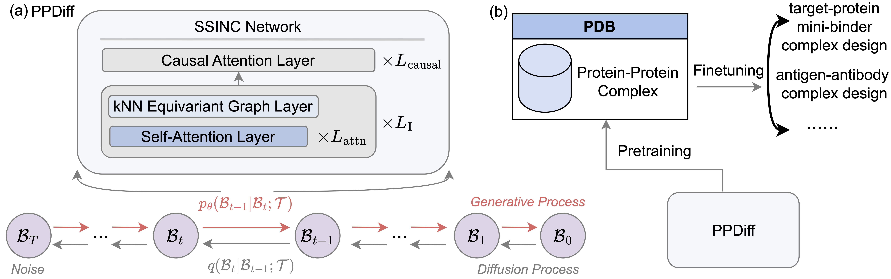 |
Zhenqiao Song, ICML 2025. [paper] [code] |

|
Zhenqiao Song, ICML 2024. [paper] [code] |
|
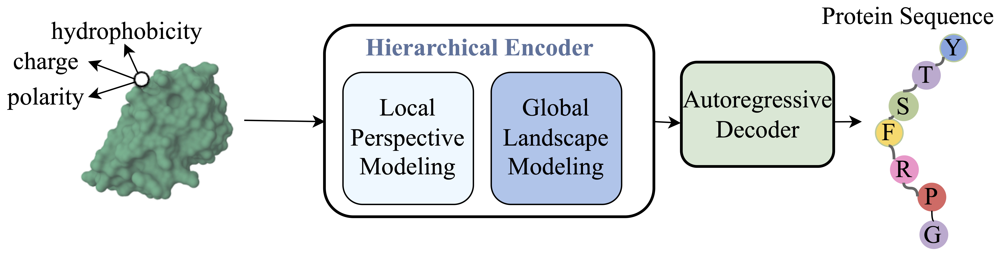 |
Zhenqiao Song, ICML 2024. [paper] [code] |
|
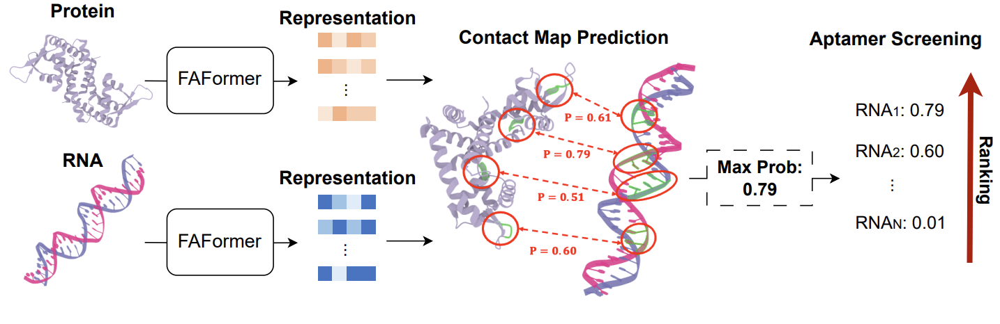 |
NeurIPS 2024. [paper] [code] |
|
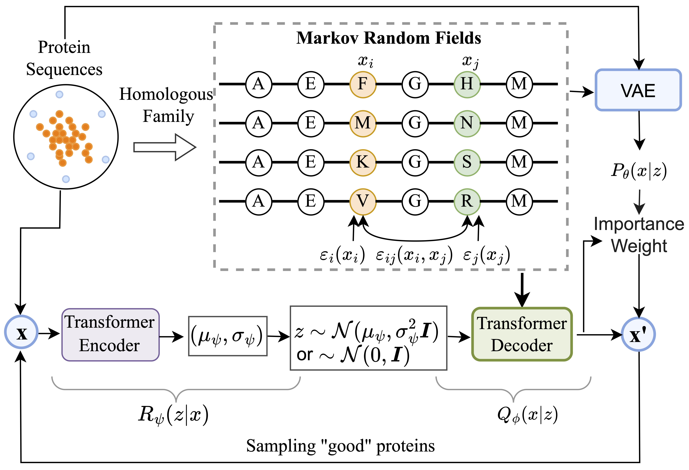 |
Zhenqiao Song, ICML 2023. [paper] [code] |
Large Language Model
|
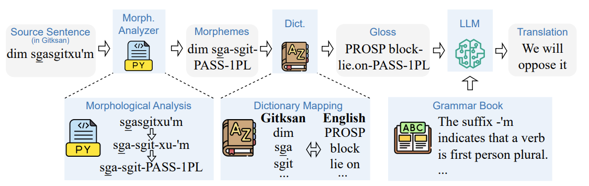 |
ACL Findings 2024. [paper] [code] |
|
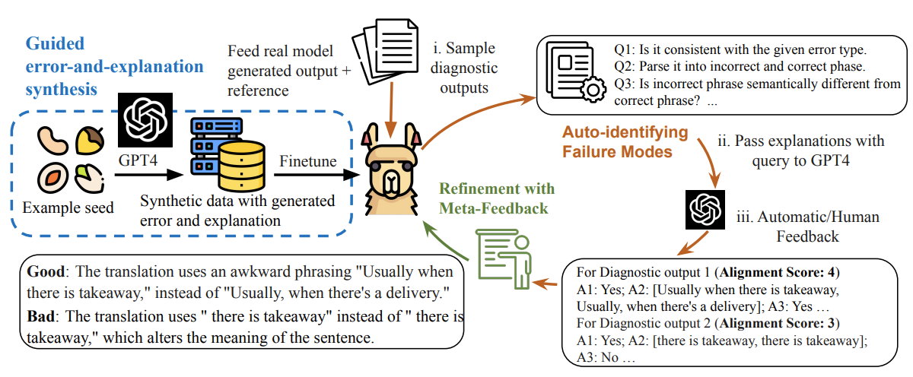 |
EMNLP (Oral) 2023. [paper] [code] |
Natural Language Processing
|
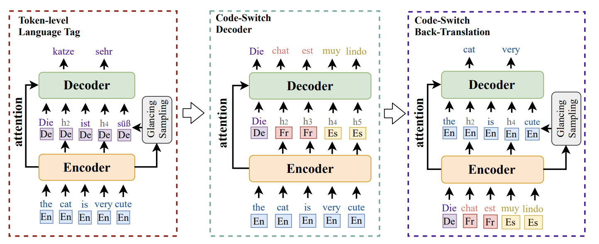 |
Zhenqiao Song, ICLR 2022. [paper] [code] |
|
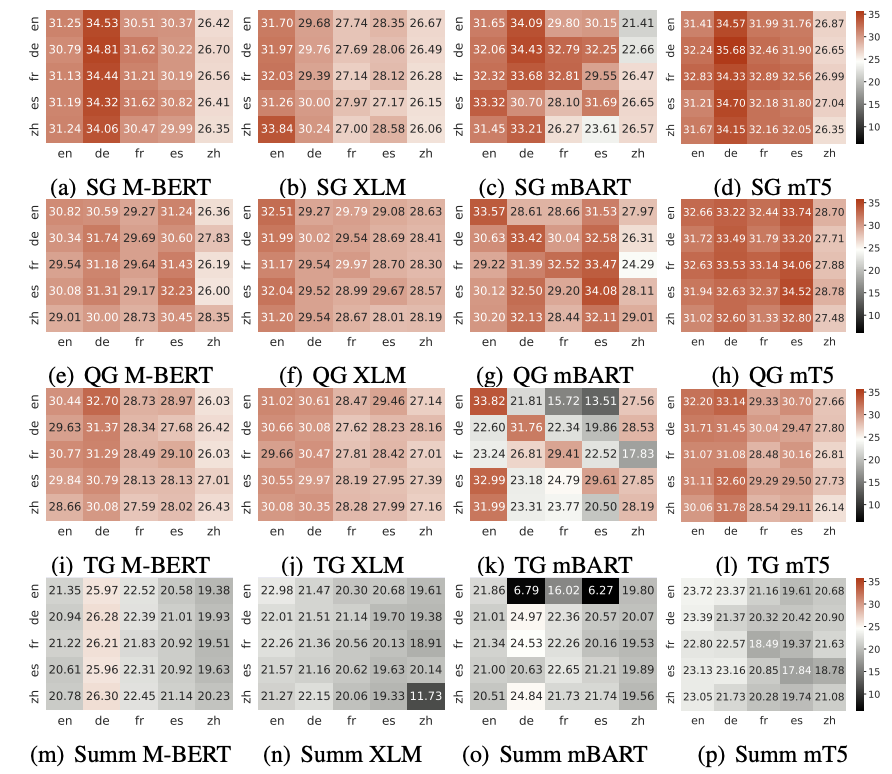 |
NAACL Findings 2022. [paper] [code] |
|
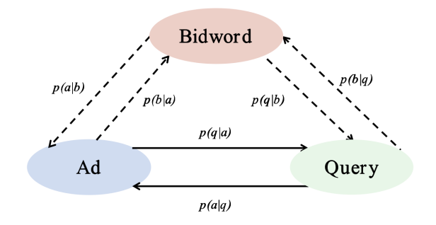 |
Zhenqiao Song, WSDM 2021. [paper] |
|
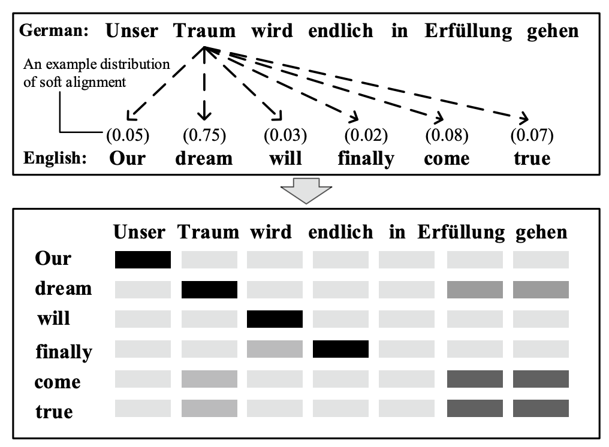 |
Zhenqiao Song, Machine Translation 2021. [paper] |
|
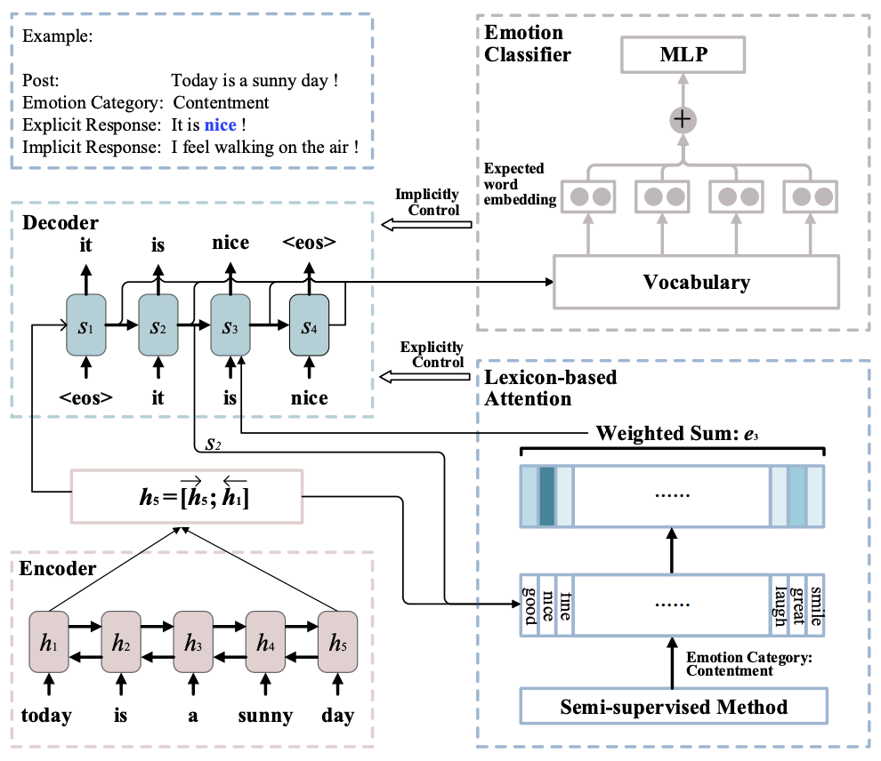 |
Zhenqiao Song, ACL 2019. [paper] [code] |
Invited Talk
- Sep. 2025: Invited talk at AstraZeneca about "Generative AI for Functional Protein Design"
- Jun. 2025: Invited talk at Google Deepmind Protein Design/Function Team!
- Apr. 2025: Invited talk at Tsinghua University Air Institute GenSI open day!
- Aug. 2024: Invited talk at Tsinghua University Air Institute!
- Jul. 2024: Invited talk at Fudan University NLP Group!
- Oct. 2023: Invited talk at 将门!
- May 2023: Invited talk at BytaDance Research!
Awards
|
|
Academic Service
Reviewers / PC Members
|
|
Organizers
|
|
Mentoring
Graduate Students
- Jacky Chen (2024.9-2025.1, University of Pittiburgh PhD)
- Ramith Hettiarachchi (2024.9-2025.1, CMU PhD)
- Xiwei Cheng (2024.6- 2025.4, UCSD master -> NorthEastern PhD)
- Yujia Gao (2024.1-2024.5, CMU master)
Undergraduate Students
- Charles Novak (2025.6 -- Now, CMU undergrad -> CMU master)
- Jingyu Zhu (2024.6-2024.9, Peking University)
- Yufei Song (2023.1-2023.12, UCSB -> UCLA master)
Interns at ByteDance AI Lab
- Lu Liu (2021.6 - 2021.9, Fudan University Master -> ByteDance NLP researcher)
- Yiran Chen (2021.6 - 2021.9, Fudan University Master -> ByteDance NLP researcher)
|
Website template from Jon Barron. |